Choseimura, Chiba: things to do, food and stays
Choseimura · Chiba
Choseimura
Highlighted on the Chiba map.
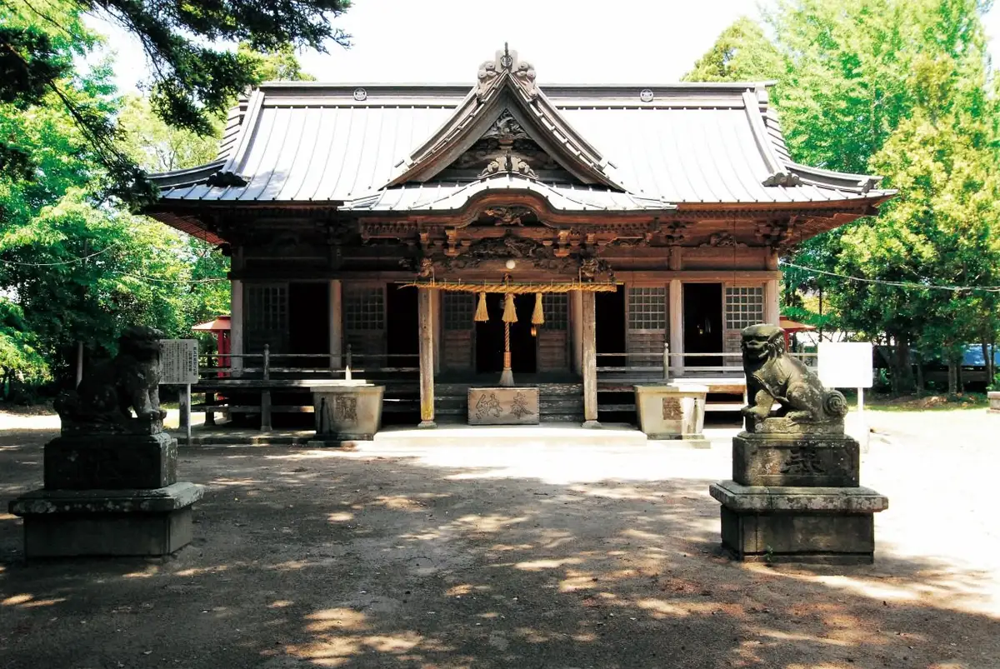
Stay
THE SECOND Chousei Beach Village
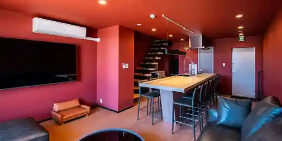
THE SECOND Chousei Beach Village
Inn in Ichimatsutsuchinoe, Choseimura with a sauna.
Beds and Dog run
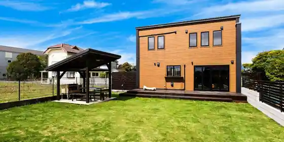
Beds and Dog run
moe resort
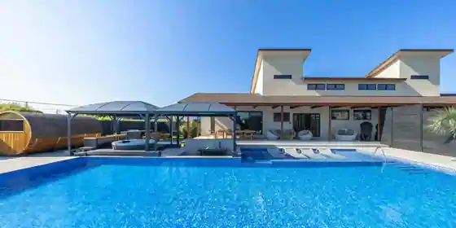
moe resort
Inn in Ichimatsutsuchinoe, Choseimura with a sauna.
PRIVE
PRIVE
スパ＆リゾート九十九里 太陽の里
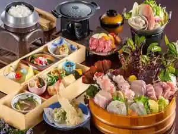
Supa & Resort Kujukuri Taiyo No Sato
ｍａｕｒｕｒｕ
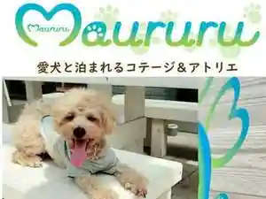
maururu
ウィズペットイン
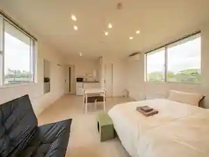
Uizupettoin
Inn in Kyo, Choseimura with pet-friendly rooms.
プライベートヴィラ アベニール
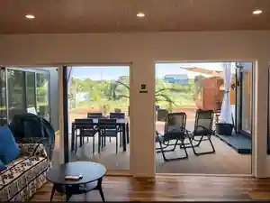
Puraibeto Villa Abeniru
Inn in Choseimura with an irori hearth dining room and a sauna.
ＡＬＬ ＳＥＡＳＯＮ ＲＥＳＯＲＴ Ｎｏ．３ 木の温もり
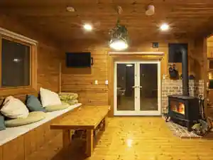
ALL SEASON RESORT No. 3 Ki No Atatamo Ri
Inn in Ichimatsutsuchinoe, Choseimura with pet-friendly rooms.
ガーデン日和九十九里 ガーデン日和
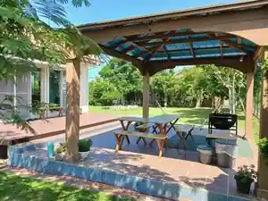
Garden Hiyori Kujukuri Garden Hiyori
ＢＵＢ ＲＥＳＯＲＴ Ｃｈｏｓｅｉ Ｖｉｌｌａｇｅ
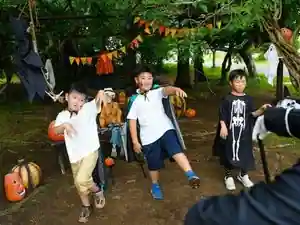
BUB RESORT Chosei Village
Mi,nami holiday home
Mi, nami holiday home
Dining
人舟
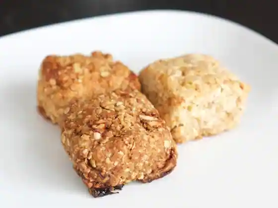
Nin Fune
中華そば専門店 ほおじろ
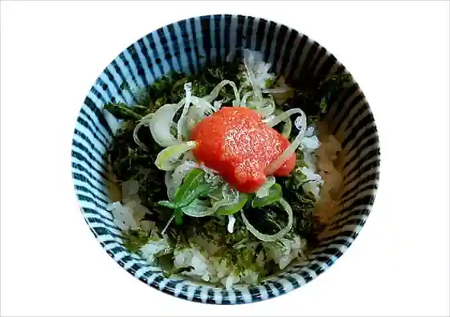
Chuka Soba Senmon Hojiro
田舎家 長生店
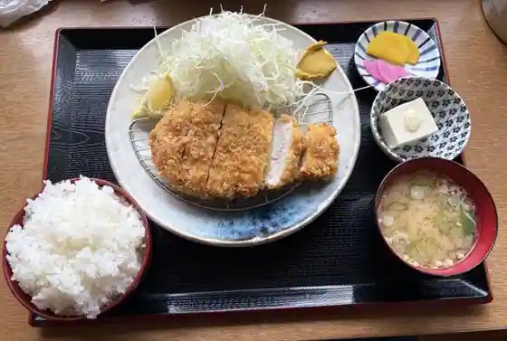
Inakaya Chosei
sachi-ta
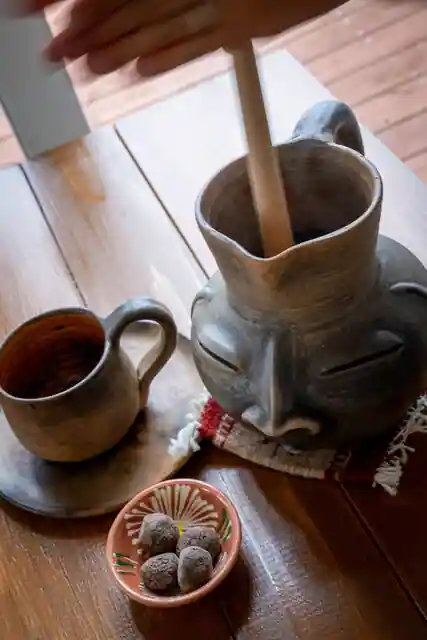
sachi-ta
カフェ椎の木
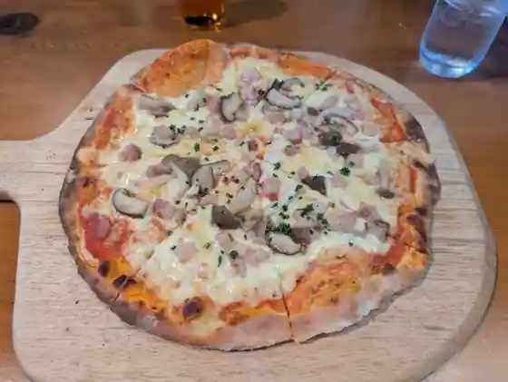
Cafe Shi No Ki
スパ&リゾート九十九里 太陽の里
Supa & Resort Kujukuri Taiyo No Sato
KUSA.喫茶
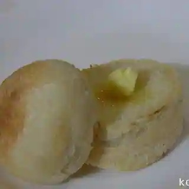
KUSA. Kissa
fato.
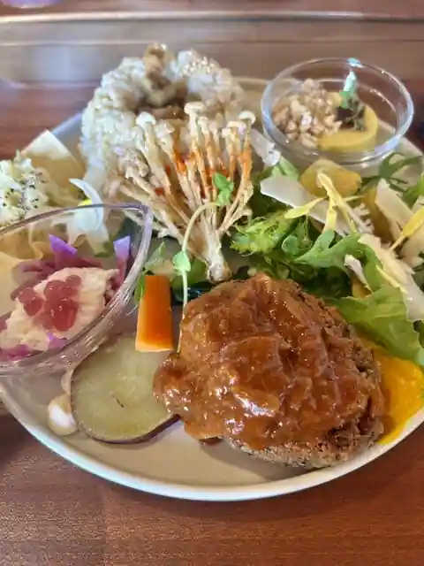
fato.
湖月
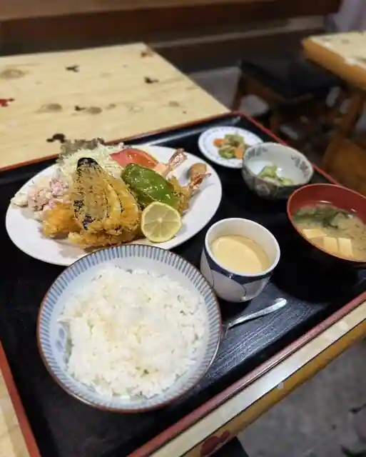
Kogetsu
きらく
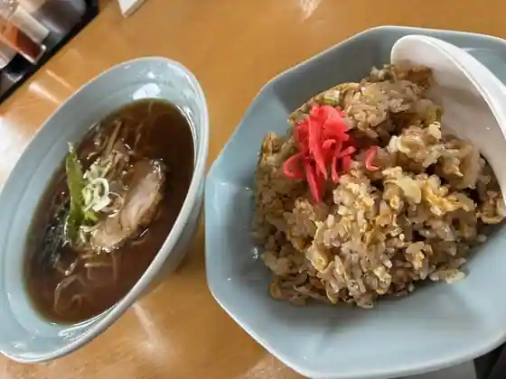
Kiraku
喜多方ラーメン坂内 茂原長生店
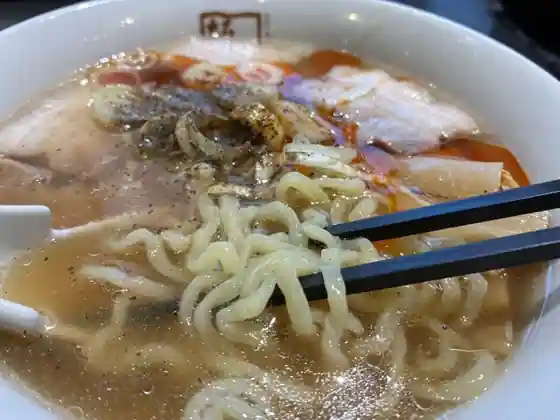
Kitakata Ramen Sakauchi Mobara Chosei
漁火亭
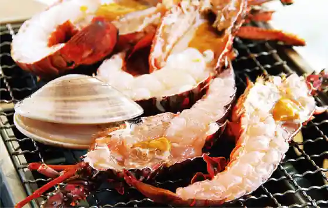
Isaribi Tei
寿司重
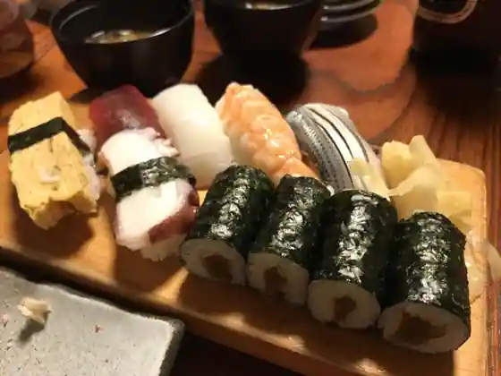
Sushi Ju
居料理や
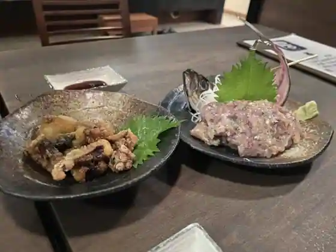
Kyo Ryori Ya
聖徳
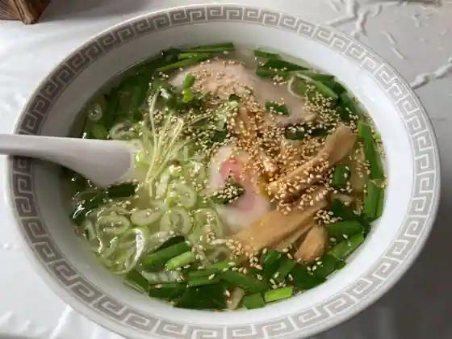
Shotoku
Bourges COFFEE HOUSE
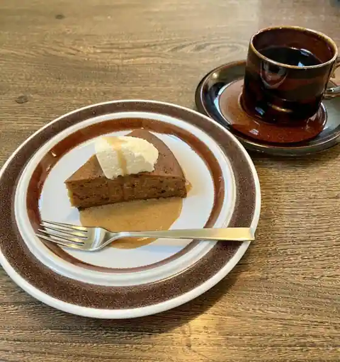
Bourges COFFEE HOUSE
ふくみ
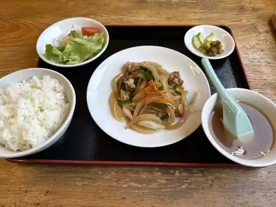
Fukumi
99ガーデン
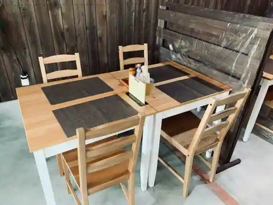
99 Garden
九十九里有料道路 一宮パーキングエリア 売店
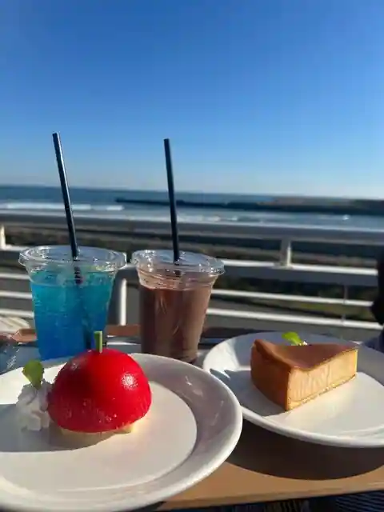
Kujukuri Yuryodoro Ichinomiya Pakingueria Bai
みのり食堂
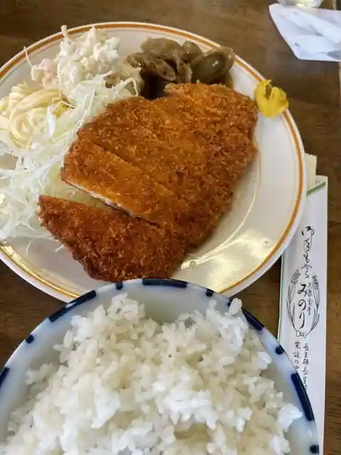
Minori Shokudo
TRATTORIA Mare 長生村店
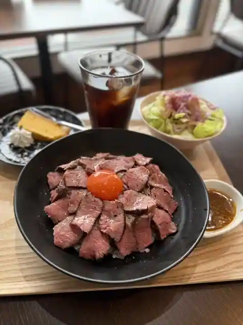
TRATTORIA Mare Chosei Mura
東松館
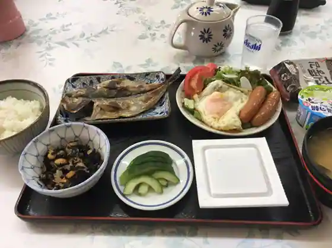
Higashi Matsudate
太陽
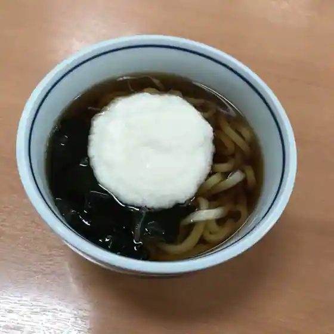
Taiyo
Sights
Amagadai General Park
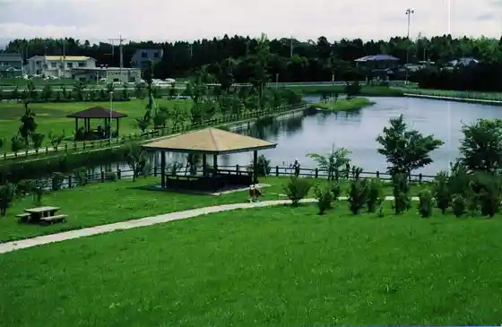
Ichimatsu Coast (Ichimatsu Beach)
Supa & Resort Kujukuri Taiyo Village
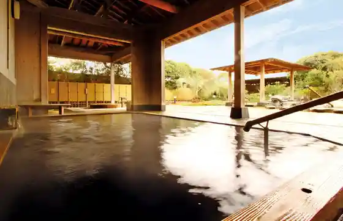
Naminori Ri Pakingu (Kujukuri Yuryodoro Ichinomiya Kyukeijo)
Choseimura Kannon
Ichimatsu Shrine
Ko Musuhi Shrine